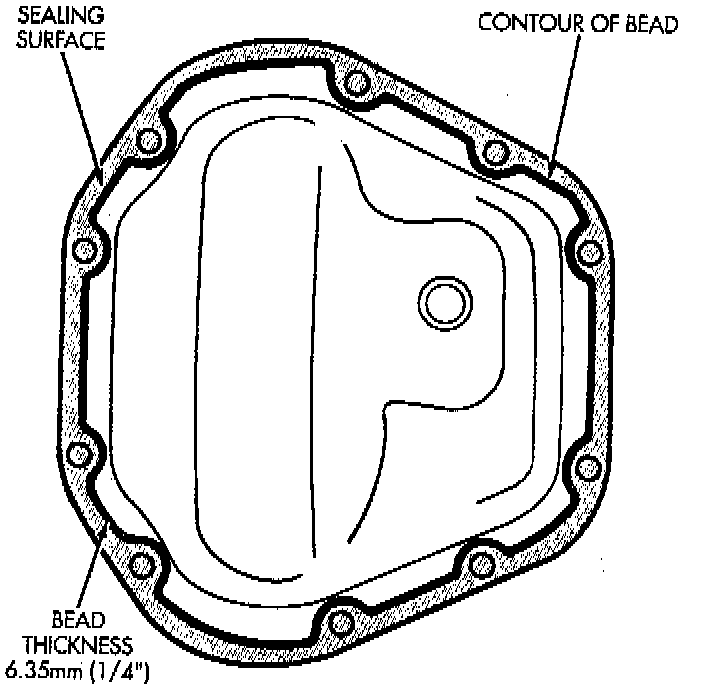

Final Assembly

1. Scrape the residual sealant from the housing and cover mating surfaces. Clean the mating surfaces with mineral spirits. Apply a bead of MOPAR Silicone Rubber Sealant, or equivalent, on the housing cover. Install the housing cover within minutes after applying the sealant.
2. Install the cover on the differential with the attaching bolts. Install the identification tag. Tighten the cover bolts to 41 Nm (30 ft. lbs.) torque.
CAUTION: Overfilling the differential can result in lubricant foaming and overheating.
3. Refill the differential housing with gear lubricant.
4. Install the fill hole plug.